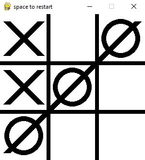
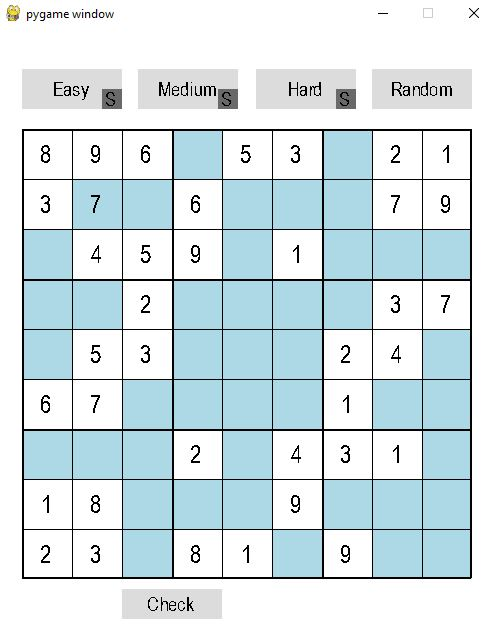

Noughts and Crosses Game

-
Turn based game with graphical user interface.
- Empty cell function: only allowing inputs into cells that have no previous input.
- Check win function: stop the game and draw a line to indicate a player has won with 3 of the same type of object (X or O) in a row.
- Restart function: by pressing SPACE on the keyboard the game will reset anew
view on GitHub: /LouisAffor/Noughts-and-Crosses
Key Features:Two player turn based game that randomly chooses the starting symbol. programmed procedually, displaying the grid and marks (X & O's) with the use of a matrix for positioning through the numpy module. Each turn the designated cells are checked to determine 1) if the game is ongoing, 2) if the cell is empty and 3) if the win condition has been met. At any point the grid can be reset by pressing the SPACE bar.
Sudoku Puzzle

-
Object oriented Sudoku game with GUI, and multiple boards.
- Web-scraping for attainment of random board
- Three integrated boards of differing difficulty (easy, medium, hard) with solutions
- Board checking function that highlights incorrect cells
- seperate Terminal sudoku solving algorithm
view on GitHub: /LouisAffor/Sudoku
Key Features:Sudoku board that has integrated boards with attached solutions solved with the use of a backtracking solution algorithm. Cell checking function that ensures that the rules of sudoku are met (therefore each row, column and 3x3 grid contains one iteration of the numbers 1-9). Random board is obtained through getting a board from nine.websudoku.com via web-scraping. Based on tutorial work.